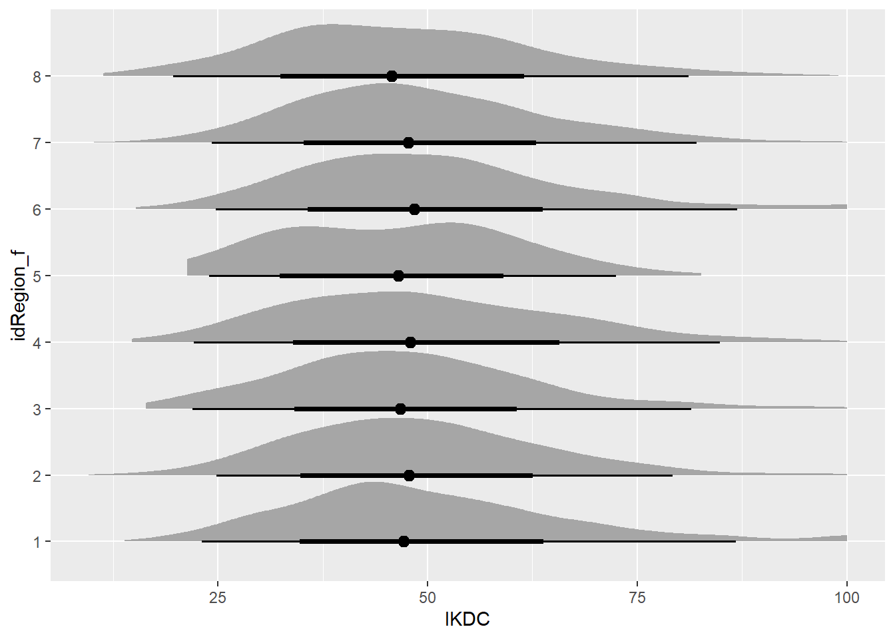

The following plan proposes a study to assess the need for a case-mixture adjustment model with respect to baseline IKDC scores in patients electing to be added to the surgical wait list at QEII Hospital. The plan highlights key elements of a potential protocol and analysis that uses best-practice to develop, assess and compare models to the current knowledge with respect to interpretation of baseline scores. Considerations for sample size requirements and study management are presented. Some issues remain outstanding with respect to the exact configuration of a case-mixture adjustment model in this context and further development work is proposed to be included in protocol development, as part of an activities list based on open science practices.
2 Preparation
Libraries and packages were installed for further analysis.
Code
if (!require("pacman")) install.packages("pacman")pacman::p_load(# Load required packages"pmsampsize","gargle","googledrive","pwrss","rcrossref","tidyverse","googlesheets4","epoxy","ggdist","simstudy","DiagrammeR","ggdag","forcats","gtsummary","gt","fabricatr","broom","broom.mixed","broom.helpers","lme4","performance","marginaleffects","sjPlot","simr","memoise","progress",install =TRUE,update =FALSE)
3 Background
The use of PROMs
Patient-reported outcome measures are used increasingly to routinely assess patients’ subjective experiences during recovery from initial injury of the anterior cruciate ligament, or subsequent surgical reconstruction, in both research and clinical settings (Ridha et al. 2025). Standardised PROMs can provide important insight into multiple dimensions of physical, mental and functional state at the consistent time points of the recovery trajectory and have also been used to define clinical failure after reconstruction (Aldag et al. 2023). Work by the department has also revealed heterogeneous patterns in patients presenting for surgical review of ACL injury when PROMs assessing different dimenions of pain, function and general health are assessed simultaneously (Ting et al. 2020).
The most frequent pathology and joints-specific PROMs for monitoring recovery after ACL reconstruction are the KOOS family (JR, 12, full) and the IKDC2000 (International Knee Documentation Committee). The IKDC2000 was chosen for the SHARKS registry due to content validity specific to ACL reconstruction. It contains one question (Symptoms Q7) that is relevant to the motivations of offering surgery in the majority of cases - what is the highest level of activity you can participate in without experiencing episodes of giving way in the knee?
The IKDC is an 18 question evaluation that measures symptoms (7 items), activities of daily living (9 items) and sport (1 item), and comparative knee function (1 item - not included in total score). Items are scored on a ordinal scale, and equally weighted to give a final score from 0 (high symptoms, low function) to 100 (no symptoms or limitations) (Irrgang et al. 2001). Good validity, responsiveness and reliability in knee surgery patients. MCID at 6 months = 6.3 and at 12 months = 16.7 (N. J. Collins et al. 2011; Winterstein et al. 2013). To account for the potential confounding effect of age and sex on IKDC scores, a z-score method was published (Anderson et al. 2006), whereby an individual score could be substracted from the mean of the matching age and sex subgroup to the patient, with the difference divided by the subgroup standard deviation.
Discussing PROMs in literature and qualitative comparisons
However, a key challenge in the implementation of PROMs in the context of service delivery to patients with ACL injury, is understanding whether treatment responses are comparable from one published report to the next. The standard method in general, is to take summary statistics, usually mean and standard deviation and make a qualitative comparison to other papers that are in turn, qualitatively judged to be comparable to the sample in question. Without a systematic approach to benchmarking results, the interpretation of PROMs can be misled by biases arising from confounding.
Importance of adjustment
Confounding bias occurs when a variable of interest and a target outcome are simultaneously influenced by a third variable (Tennant et al. 2020). In the proposed study, the variable of interest would be the source of IKDC population estimate (study) and the outcome would be the IKDC total score, while the third variable (the confounder) might be age at the time of initial presentation. An adjustment in this context would compare the IKDC total score between studies within a multivariable regression, which parses out the influence of each variable on the variability of the IKDC score.
Variation in context (setting, patient demographics, service delivery)
3.1 Literature Benchmarks
The natural entry point into benchmarking local data is to draw on the existing literature in one of two ways. The first is to make a comparison across all available reports and place the local sample within the context of all findings. The second is to conduct a matching process and identify reports that best match the context and data-generation of the local sample and make targeted comparisons.
Let’s start with the first approach and draw on as broader pool as possible. A recent systematic review (Ridha et al. 2025) may provide an initial framework to draw from. It reviewed papers reporting the IKDC(2000) from baseline through to 2 years after surgical reconstruction, as well as non-operative management over the same time period.
Figure 1: Trajectory of IKDC2000 up to 24 months after surgical reconstruction (left) or after injury with nonsurgical management (right). Reproduced from (Ridha et al. 2025).
The baseline variation for surgical reconstruction cases in Figure 1 is relatively wide, from ~20 up to ~90 points. It can be seen that the majority of the included papers report baseline data within the range 40-70. The figure illustrates a key pitfall of reviewing studies of PROMs in general, and the IKDC in particular. One study illustrated on the plot resides near zero for all time points. This is a misinterpretation by the review authors, although the paper should be excluded for other reasons. The IKDC2000 can be reported with a normalised score, which takes the sum of the available responses and converts it to a percentage of the maximum score available (with a scale of 0-100). The original paper (Rajput et al 2020) identified used a normative version of the IKDC score, first reported by (Anderson et al. 2006), which calculates a z-score of the normalised score relative to the mean and standard deviation of an age and sex matched cohort. To make matters more complicated for reviewers, the normative score can be generated with two sets of age and sex-matched cohorts - with and without knee injury at the time of cross-sectional survey. The lack of reporting in Rajput et al (it does not state which normative dataset was used to generate the results) should disqualify it from inclusion in the review, and for our purposes here.
Table 1: Study question 1 identified under the PICOS framework
Component
Description
Comments
Participants
Patients presenting with injury of the anterior cruciate ligament
Patients present under variable circumstances, with referrals from emergency or primary care
Intervention
Electing to be added to the wait list for surgical reconstruction within the public health system
Typical wait times within the department are ~4months from initial consultation
Comparator
Compared to the published literature
Split into two approaches - overall combined results (meta-analysis) or with selective matching of contextually similar studies
Outcomes
Is baseline IKDC significantly different to published data when adjusted for confounders with respect to normalised or z-score totals
Study Design
Meta-analysis and simulation
Table 2: Study question 2 identified under the PICOS framework
Component
Description
Comments
Population
Patients presenting with injury of the anterior cruciate ligament electing to be added to the surgical wait list
Intervention
Development and application of a multivariable case-mixture adjustment model to baseline IKDC scores, accounting for the heterogeneity in case presentation
Application of a case-mixture adjustment model, may incorporate results of Question 1 with respect to regional-methods factors
Comparator
Compared internally to unadjusted IKDC scores
Compared externally to existing risk adjustment models (Burgess et al. 2019)
Outcome
The model will demonstrate the need for adjustments that exceed published metrics for IKDC (e.g. MCID), as well as adequate calibration and clinical utility for implementation
Study Design
Cross-sectional observational study with retrospective model development and internal validation
5 Hypotheses
Each question posed for this project generates a number of clinical and statistical hypotheses, summarised below.
Table 3: Summary of clinical and statistical hypotheses associated with Question 1
Type
Clinical
Statistical
Question 1 - Null
After adjusting for confounders, there is no difference in IKDC scores between our population and the published literature
Question 1 - Alternative
Patients with anterior cruciate ligament injuries presenting to QEII Hospital have baseline (IKDC) scores that differ significantly from those reported in the published literature, after adjusting for relevant patient and injury characteristics
After adjusting for confounders, there remains a significant difference in IKDC scores between our population and the published literature
Question 2 - Null
A case-mixture adjustment model offers no clinical benefit on raw IKDC scores collected as part of routine practice at baseline assessment
A multivariable model incorporating case-mix variables cannot significantly predict baseline IKDC scores beyond random chance (R² = 0) OR the model demonstrates poor calibration and lacks clinical utility
Question 2 - Alternative
Sufficient heterogeneity exists in baseline IKDC scores that can be explained by measurable patient and injury characteristics that justifies the need for case-mixture adjustment.
A multivariable case-mix model can significantly predict baseline IKDC scores with clinically meaningful accuracy (R² ≥ 0.3), calibration and clinical utility
6 Methods - Proposed
6.1 Data sources
Local sample - the local sample will be derived from the SHARKS registry. The SHARKS registry is an HREC-approved clinical registry embedded into the department of orthopaedics at QEII Jubilee Hospital. More information is available from the most recent governance report. The Tibiofemoral Instability cohort of the registry draws in patients presenting with injury or other pathology of the ligaments (cruciate | collateral) and complexes of the posterior lateral or medial corners.
Literature - a non-systematic search will be conducted of Pubmed, Google Scholar to retrieve systematic reviews describing the trajectory of IKDC from baseline to followup, or including papers describing the IKDC at least at baseline prior to surgical reconstruction or non-operative management. The citationchaser application Haddaway, Grainger, and Gray (2021) will be used to retrieve citations from relevant reviews and meta-analyses. Where available, full-text sources will be retrieved and baseline IKDC and relevant contextual factors extracted and summarised in spreadsheet form for further processing.
6.2 Sample selection
Cases will be retrieved from SHARKS that match the criteria described in Ting et al. (2020) and summarised below.
Table 4: Summary of inclusion and exclusion criteria for local sample
Inclusion
Exclusion
Comments
Enrolled in SHARKS registry
Surgical booking not offered
Inclusion criteria for SHARKS can be reviewed on wiki or governance report
Primary presentation
Presentation is the contralateral limb of a previous ACL rupture
Clinical and imaging-supported diagnosis of ACL rupture
ACL pathology is a non-traumatic or congenital absence or deficiency
Concomitant pathology is limited to menisci
Pathology to collateral and other cruciate ligaments deemed to require surgical reconstruction at the time of surgery
Withdrawal of consent to participate in registry prior to surgery
6.3 Variables
The study dataset will be drawn from three main sources. The first is the SHARKS dataset, specifically for the Tibiofemoral Instability cohort, which can be found on the registry wiki.
The second source is to review the relevant literature and identify any other variables that may not already be collected in the registry dataset, but may be relevant to answering the question posed. An initial review is included below - to be expanded further for the study analysis.
Previous work by our group reported no relationship between PROMs phenotype (cluster) and patient age, sex, body mass index or injury to examination delay Ting et al. (2020). Importantly, this study did not directly assess the relationship (adjusted or unadjusted) between baseline IKDC and patient demographics. There is a paucity of data addressing this question directly in the literature, therefore related literature will be drawn on to build a directed acyclic graph, to identify a reasonable adjustment set informing the study dataset.
6.3.1 The MOON Group
The first place to start is the MOON (Multicentre Orthopaedic Outcomes Network) Knee Group, which is a prospective cohort registry of anterior cruciate injuries and surgical reconstruction across 19 physicians and 7 health institutions in the United States, that have enrolled >3500 cases since 2002.
Research from this dataset has identified time from injury to surgery as a key factor influencing baseline IKDC scores for primary ACL injury (Nguyen et al. 2016). Adjusted for covariates.
Factors associated with more pain at baseline were higher body mass index, female sex, concomitant lateral collateral ligament injury and older age (Dunn et al. 2010).
The MOON group previously compared their baseline data (N = 713) to the Norwegian Knee Ligament Registry (N = 4928) (Magnussen et al. 2009) and observed the following;
Significant difference in age at surgery
Significant difference in sex proportions
Considerable differences in activity associated with injury
Significant difference in time from injury to surgery
Significant difference in meniscal and chondral pathology incidence
Significant differences in all but one (QoL) subscales of KOOS, but none of the differences exceeded MCID except for “other symptoms”. However, this was based on an unadjusted comparison.
6.3.2 Other variables
There are other factors that have not been raised in the literature to date that should be taken into account when attempting to compare samples drawn from a global population.
Patient
Comorbidities
General health
Education
Bilateral status (index injury or subsequent to contralateral)
Surgical history (ipsilateral knee | limb)
Healthcare setting
Type of service (public, private, other)
Referral pathway includes emergency department within facility
Country | state referral pathways and regulations
Data collection setting
Cohort or randomised trial of limited scope vs regional, state or national registry
Consent model (opt in vs opt-out)
Measurements
Collection method (paper vs electronic)
PROMs version
Scoring method (normalised vs z-score)
Table 5: Summary of study variables required
Category
Variable
Type - Response
Available SHARKS
Model Parameters
Available Published
Patient
Age at presentation
Continuous - Years
Yes
1 -3
Yes
Sex
Categorical
Yes
1
Yes
Activity Type
Categorical
No
1
Possible (not universal)
Activity Level
Ordinal
Yes - Tegner Activity Scale
1 - 10
Possible (not universal)
Body Mass Index
Continuous
Yes
1 - 3
General Health
Continuous
Yes - VR12
1 - 3
Unlikely (not usually collected)
Referral Pathway
Injury to Review delay
Continuous
Partial - chart review will be required
1 - 3
Possible (not universal)
Pathology
Concomitant ligament injury
Categorical
Partial - chart review will be required
1
Yes
Concomitant meniscal pathology
Categorical
Partial - chart review will be required
1
Yes; form of capture can vary between studies
Setting
Service Type
Categorical
Yes
1
Yes
Consent Model
Categorical
Yes
1
Yes
Measurement
Data Collection
Categorical
Yes
1
Yes
PROMs version
Categorical
Yes
1
Yes
Scoring method
Categorical
Yes
1
Possible; often not described
The list of potential variables to include in the literature-based or local adjustment models is quite extensive, as shown in Table 5. Further work is required to refine the list to a manageable size.
Code
DAGPROM <- ggdag::dagify( IKDCBase ~ Sample + Age + Sex + BMI + Bilateral + MeniscPath + ChondPath + InjuryPres + ActivityLevel + GeneralHealth + ServiceType + CollectType + CollectMethod, Sample ~ Age + Sex + BMI + Bilateral + MeniscPath + ChondPath + InjuryPres + ActivityLevel + GeneralHealth + ServiceType + CollectType + CollectMethod, Bilateral ~ Age + Sex, BMI ~ Age + Sex + ActivityLevel, GeneralHealth ~ Age + ActivityLevel + Sex + BMI, MeniscPath ~ Age + ActivityLevel + Sex + BMI + InjuryPres, ChondPath ~ Age + ActivityLevel + Sex + BMI + InjuryPres, ActivityLevel ~ Age + Sex + BMI + Bilateral, InjuryPres ~ ServiceType + CollectType + ActivityLevel,labels =c("IKDBase"="Baseline IKDC","Sample"="Study \n group","Age"="Age at\n Initial Exam","Sex"="Sex","BMI"="Body Mass\n Index","Bilateral"="Bilateral Presentation","MeniscPath"="Meniscal\n Pathology","ChondPath"="Chondral\n Pathology","InjuryPres"="Injury to\n Presentation","ActivityLevel"="Activity\n Level", "GeneralHealth"=" General\n Health","ServiceType"="Health Service\n Type","CollectType"="Collection Service/n Type","CollectMethod"="Method of\n Collection" ),exposure ="Sample",outcome ="IKDCBase")# Create a tidy version of the DAG and apply custom labelstidy_dag1 <- ggdag::tidy_dagitty(DAGPROM, layout ="auto") |> dplyr::mutate(label =case_when( name =="IKDBase"~"Baseline IKDC", name =="Sample"~"Study \n group", name =="Age"~"Age at\n Initial Exam", name =="Sex"~"Sex", name =="BMI"~"Body Mass\n Index", name =="Bilateral"~"Bilateral Presentation", name =="MeniscPath"~"Meniscal\n Pathology", name =="ChondPath"~"Chondral\n Pathology", name =="InjuryPres"~"Injury to\n Presentation", name =="ActivityLevel"~"Activity\n Level", name =="GeneralHealth"~" General\n Health", name =="ServiceType"~"Health Service\n Type", name =="CollectType"~"Collection Service\n Type", name =="CollectMethod"~"Method of\n Collection",TRUE~ name ) )# DagPlot <-ggplot( tidy_dag1,aes(x = x,y = y,xend = xend,yend = yend) ) +geom_dag_node(color ="darkblue",fill ="lightblue",alpha =0.5,size =20) +geom_dag_text(aes(label = label ),color ="black",fontface ="bold",size =3,vjust =0.5 ) +geom_dag_edges(edge_color ="gray50",edge_width =0.5,#edge_arrow_size = 0.3 ) +theme_dag(base_size =12,base_family ="",plot.background =element_rect(fill ="white"),panel.background =element_rect(fill ="white") ) +theme(plot.title =element_text(hjust =0.5,size =16,face ="bold" ),plot.margin =margin(20,20,20,20 ) )knitr::knit_print(DagPlot)
Figure 2: Directed acyclic graph of Sample -> IKDC Baseline
The DAG presented in Figure 2 illustrates the high-dimensionality of the relevant variables with respect to baseline IKDC prior to ACL reconstruction. Further analysis to identify a minimum adjustment set may not be fully effective in this instance.
Figure 3: Calculated minimum adjustment set for modelling Sample -> IKDC at Baseline
The final adjustment model identified with the DAG approach (Figure 3) remains highly specified and will likely present a challenge with respect to developing a reasonable model, as well as collating a sufficient sample size for the purposes of prognostication and case adjustment. These variables will likely need to be prioritised further during protocol development.
6.4 Data Collection
Code
flowchart TD subgraph S1 ["Literature-Based Analysis"] A[Literature Review] --> B[Data Extraction] B --> C[Simulation] A -.-> A1["Search databases<br/>Screen articles<br/>Apply inclusion criteria"] B -.-> B1["Extract key parameters<br/>Standardize data formats<br/>Quality assessment"] C -.-> C1["Model development<br/>Parameter estimation<br/>Scenario analysis"] end subgraph S2 ["Registry-Based Analysis"] D[Cohort Retrieval] --> E[Chart Review] D -.-> D1["Query clinical registry<br/>Apply selection criteria<br/>Export patient data"] E -.-> E1["Manual chart review<br/>Data validation<br/>Clinical assessment"] end style A1 fill:#f0f8ff,stroke:#4682b4,stroke-dasharray: 5 5 style B1 fill:#f0f8ff,stroke:#4682b4,stroke-dasharray: 5 5 style C1 fill:#f0f8ff,stroke:#4682b4,stroke-dasharray: 5 5 style D1 fill:#fff8dc,stroke:#daa520,stroke-dasharray: 5 5 style E1 fill:#fff8dc,stroke:#daa520,stroke-dasharray: 5 5 classDef litBox fill:#e6f3ff,stroke:#4682b4,stroke-width:2px classDef regBox fill:#fffacd,stroke:#daa520,stroke-width:2px class A,B,C litBox class D,E regBox
flowchart TD
subgraph S1 ["Literature-Based Analysis"]
A[Literature Review] --> B[Data Extraction]
B --> C[Simulation]
A -.-> A1["Search databases<br/>Screen articles<br/>Apply inclusion criteria"]
B -.-> B1["Extract key parameters<br/>Standardize data formats<br/>Quality assessment"]
C -.-> C1["Model development<br/>Parameter estimation<br/>Scenario analysis"]
end
subgraph S2 ["Registry-Based Analysis"]
D[Cohort Retrieval] --> E[Chart Review]
D -.-> D1["Query clinical registry<br/>Apply selection criteria<br/>Export patient data"]
E -.-> E1["Manual chart review<br/>Data validation<br/>Clinical assessment"]
end
style A1 fill:#f0f8ff,stroke:#4682b4,stroke-dasharray: 5 5
style B1 fill:#f0f8ff,stroke:#4682b4,stroke-dasharray: 5 5
style C1 fill:#f0f8ff,stroke:#4682b4,stroke-dasharray: 5 5
style D1 fill:#fff8dc,stroke:#daa520,stroke-dasharray: 5 5
style E1 fill:#fff8dc,stroke:#daa520,stroke-dasharray: 5 5
classDef litBox fill:#e6f3ff,stroke:#4682b4,stroke-width:2px
classDef regBox fill:#fffacd,stroke:#daa520,stroke-width:2px
class A,B,C litBox
class D,E regBox
Figure 4: Flowchart of data collection steps in proposed study
The data collection for this study will be conducted over multiple lines of action as illustrated in Figure 4;
Literature retrieval and data extraction
Filtering for comparable studies to the local dataset based on population characteristics, healthcare setting and data-generation mechanisms.
Chart review of relevant cases in SHARKS registry
An initial list derived from SHARKS registry, shared with hospital collaborator. Includes form links to standardised input for comorbidities and other inputs
Chart review with feedback on each record for inclusion/exclusion variables
Matching and processing to produce a refined list for data retrieval on included records only
Data simulation based on parameters retrieved from relevant literature
Distribution parameters of outcome data (IKDC) and sample characteristics as per Figure 3.
Covariance parameters retrieved from related studies detailing total effects of each parameter on baseline IKDC.
7 Methods - Analysis
Now that we have some sources to work with, for the purposes of this planning document it is now possible to walk through a simulated analysis to illustrate how the study will look. The first step is to define the literature characteristics to take these into account in the case-mixture adjustment when comparing our local data to the broader knowledge. For the purposes of this illustration, the following characteristics have been included;
Table 6: Region and study characteristics incorporated into analysis simulation
Characteristic
Responses
Comments
Study type
Randomised controlled trial
Registry
Uncontrolled cohort or case series
Effect of selection bias
0; -1; -2
The least biased with respect to patient selection would be national registry
Measurement precision
0.8; 0.9; 0.7
Large-scale registry most precise
Missing date rate
0.05; 0.15; 0.20
RCT generally has lowest missing data rate
Capture method
Electronic; Paper
Expect a roughly even split across studies and regions
Variance due to measurement error
2; 4
Expect electronic to be more precise for the purposes of the simulation
This will need refinement during literature extraction
Resources available to patient prior to surgical review
4, 2, 3, 1
This is more related to socioeconomic status of country_region
Case complexity
65, 50, 35, 20
Severity of functional deficit at the time of review
Code
set.seed(2065)# Step 1: DEFINE STUDY CHARACTERISTICS AND DATA GENERATING MECHANISMS# =============================================================================# Define study types and their characteristics (from draft 2)study_types <-tibble(study_type =c("RCT", "Registry", "Observational_Cohort"),selection_bias_effect =c(0, -2, -1), # RCT least biasedmeasurement_precision =c(0.8, 0.9, 0.7), # Registry most precisemissing_data_rate =c(0.05, 0.15, 0.20))# Define data capture methodscapture_methods <-tibble(capture_method =c("Electronic", "Paper"),measurement_error_sd =c(2, 4), # Electronic more preciseprocessing_delay_bias =c(0, 0.5))# Define healthcare setting typessetting_types <-tibble(setting_type =c("Academic_Medical_Center", "Community_Hospital", "Specialty_Clinic", "Primary_Care"),resource_avail =c(4, 2, 3, 1), # 1=low, 4=high resourcescase_complexity_mean =c(65, 50, 35, 20), # baseline severitystaff_training_effect =c(2, -1, 1, -2))
We’ll use a simulation package to create a hierarchical dataset with the following structure
Region - highest level
Study - nested within region; contains study characteristics
Patient - nested within study and region; contains patient-level characteristics
Code
# Step 2: Define Region-level variation (affects baseline IKDC across regions)gen.region <-defData(varname ="RegionEffect",dist ="normal",formula =0, # Overall mean effectvariance =8, # Between-region variance for IKDCid ="idRegion")gen.region <-defData( gen.region,varname ="nStudy",dist ="noZeroPoisson",formula =4)# Add regional preferences for study types and settingsgen.region <-defData( gen.region,varname ="region_academic_preference",dist ="normal",formula =0,variance =0.25)gen.region <-defData( gen.region,varname ="region_electronic_adoption",dist ="normal", formula =0.4, # Base 70% electronic adoptionvariance =0.06)# Generate regionsdtRegion <-genData(8, gen.region) |>mutate(region_electronic_adoption =pmax(0.25, pmin(0.8, region_electronic_adoption)) )
Now that the region characteristics have been defined, the study characteristics can be defined, including an effect of study on variation in baseline IKDC, the sample size and regional variation on the proportion of male cases within the study sample.
Code
# Step 3: Define Study-level variation within regionsgen.study <-defDataAdd(varname ="StudyEffect", dist ="normal", formula =0, # Mean study effect within regionvariance =2# Between-study variance within region)gen.study <-defDataAdd( gen.study,varname ="nSample", dist ="noZeroPoisson",formula =150# Sample size per study)# Add study design characteristicsgen.study <-defDataAdd( gen.study,varname ="study_type_prob",dist ="uniform",formula ="0;1")gen.study <-defDataAdd( gen.study,varname ="setting_type_prob", dist ="uniform",formula ="0;1")# Add regional variation in covariate distributions (from draft 1)gen.study <-defDataAdd( gen.study,varname ="RegionMaleRate",dist ="normal",formula ="0.69 + 0.15 * RegionEffect/5", # Regional variation in male proportionvariance =0.01)gen.study <-defDataAdd( gen.study,varname ="RegionAgeShift",dist ="normal", formula ="RegionEffect * 0.5", # Regional age variationvariance =1)gen.study <-defDataAdd( gen.study,varname ="idPatient",dist ="uniform", formula ="1;40"# number of patients per study)# Generate studies within regionsdtStudy <-genCluster(dtRegion, "idRegion", numIndsVar ="nStudy", level1ID ="idStudy")dtStudy <-addColumns(gen.study, dtStudy)# Assign study characteristics based on probabilitiesdtStudy <- dtStudy |>mutate(RegionMaleRate =pmax(0.4, pmin(0.8, RegionMaleRate)),# Assign study typestudy_type =case_when( study_type_prob <0.3~"RCT", study_type_prob <0.6~"Registry", TRUE~"Observational_Cohort" ),# Assign setting type (academic centers more likely in regions with positive effects)setting_type =case_when( setting_type_prob < (0.2+0.1*pmax(0, RegionEffect/5)) ~"Academic_Medical_Center", setting_type_prob <0.5~"Specialty_Clinic", setting_type_prob <0.8~"Community_Hospital",TRUE~"Primary_Care" ),# Assign capture method based on regional adoptioncapture_method =ifelse(runif(n()) < region_electronic_adoption, "Electronic", "Paper" ) ) |># Join with study characteristicsleft_join(study_types, by ="study_type") |>left_join(setting_types, by ="setting_type") |>left_join(capture_methods, by ="capture_method")
We then move to estimating patient characteristics based on the hierarchical data structure, with patient age, sex proportions and the incidence of meniscus or cartilage pathology all varying by region. In addition, socioeconomic status, education level and comorbidity burden have been incorporated into the simulation. These have been included for illustration purposes as these are typically not reported in the literature for ACL injury and reconstruction.
Now that we have the independent variables defined, we can generate a varying IKDC score that is clustered to regions and studies.
Code
#Step 5: Define IKDC with hierarchical structure and study methodology effectsgen.patient <-defDataAdd( gen.patient,varname ="ikdc_base",formula ="log(72 - 0.25 * Age + 4 * Male - 0.4 * BMI - 12 * MeniscusCartilage + 0.1 * ses_score - 2 * comorbidity_count)",variance =0.06,dist ="gamma",link ="log")# Add study methodology effects to IKDCgen.patient <-defDataAdd( gen.patient,varname ="IKDC_raw",formula ="ikdc_base + RegionEffect + StudyEffect + selection_bias_effect + staff_training_effect",dist ="nonrandom")# Add measurement error based on capture methodgen.patient <-defDataAdd( gen.patient,varname ="measurement_error",dist ="normal",formula ="0",variance ="measurement_error_sd^2")gen.patient <-defDataAdd( gen.patient,varname ="IKDC",formula ="pmax(pmin(IKDC_raw + measurement_error + processing_delay_bias, 100), 0)",dist ="nonrandom")# Generate patients within studiesdtPatient <-genCluster( dtStudy, cLevelVar ="idStudy",numIndsVar ="nSample",level1ID ="idPatient")dtPatient1 <-addColumns(gen.patient, dtPatient)
The literature dataset is now in place - we can move to a separate dataset to represent the local SHARKS dataset. Then the study characteristics are added to enable combination with the literature dataset for further analysis.
Code
# Step 6: Add the local SHARKS dataset with known characteristicsSHARKSDef <-defData(varname ="age_offset",dist ="gamma",formula ="log(27.3 - 16)",variance = (7.8^2) / (27.3-16)^2, link ="log")SHARKSDef <-defData( SHARKSDef,varname ="Age",formula ="age_offset + 16",dist ="nonrandom")SHARKSDef <-defData( SHARKSDef, varname ="Male", dist ="binary",formula =0.69, link ="logit")SHARKSDef <-defData( SHARKSDef,varname ="bmi_scale",formula ="log(26 + 0.15 * (Age - 25) + 3 * Male)",variance =0.04,dist ="gamma",link ="log")SHARKSDef <-defData( SHARKSDef,varname ="BMI",formula ="pmax(pmin(bmi_scale, 40), 18)",dist ="nonrandom")SHARKSDef <-defData( SHARKSDef,varname ="MeniscusCartilage",formula ="-1.5 + 0.02 * Age + 0.04 * Male + 0.06 * BMI",dist ="binary",link ="logit")# Add socioeconomic variables for local dataSHARKSDef <-defData( SHARKSDef,varname ="ses_score",dist ="normal",formula =52, # Slightly above average for your settingvariance =80)SHARKSDef <-defData( SHARKSDef,varname ="education_years", dist ="normal",formula =15, # Higher education in your populationvariance =6)SHARKSDef <-defData( SHARKSDef,varname ="comorbidity_count",dist ="poisson",formula ="log(3.2 + 0.02 * Age)"# Higher comorbidity)SHARKSDef <-defData( SHARKSDef,varname ="ikdc_scale",formula ="log(72 - 0.25 * Age + 4 * Male - 0.4 * BMI - 12 * MeniscusCartilage + 0.1 * ses_score - 2 * comorbidity_count)",variance =0.12,dist ="gamma",link ="log")SHARKSDef <-defData( SHARKSDef,varname ="IKDC",formula ="pmax(pmin(ikdc_scale, 100), 0)",dist ="nonrandom")# Generate local SHARKS dataSHARKSData <-genData(n =500, SHARKSDef)# Add study characteristics for local dataSHARKSLocal <- SHARKSData |>mutate(idRegion =1,idStudy =0,idPatient =row_number() +max(dtPatient$idPatient),RegionEffect =0,StudyEffect =0,RegionMaleRate =0.69,RegionAgeShift =0,nStudy =NA,nSample =NA,# Local study characteristicsstudy_type ="Observational_Cohort",setting_type ="Community_Hospital", # Adjust as appropriatecapture_method ="Electronic",selection_bias_effect =-1,measurement_precision =0.7,missing_data_rate =0.20,resource_avail =2,case_complexity_mean =50,staff_training_effect =-1,measurement_error_sd =2,processing_delay_bias =0,# Intermediate variablesage_offset =NA,bmi_scale =NA,ikdc_base =NA,ikdc_scale = IKDC,IKDC_raw = IKDC,measurement_error =0,region_academic_preference =0,region_electronic_adoption =1,study_type_prob =NA,setting_type_prob =NA )
We now combine the datasets and make some final adjustments to enable application of regression methods for a hierarchical model construction to underpin the case-mixture adjustment.
Let’s have a look at the dataset in table and plot forms so we can understand the data structure a bit better. Let’s have a look at the variation in IKDC by region.
Code
FigSimIKDC <- dtAnalysis |>ggplot(aes(y = idRegion_f, x = IKDC)) +stat_halfeye()knitr::knit_print(FigSimIKDC)

Figure 5: Distribution of simulated IKDC at baseline assessment across multiple regions. Region 0 is the local dataset
Now let’s summarise simply using a table to have a look at all of the different characteristics. Keep in mind, the capture method for SHARKS is actually split between electronic and paper.
Table 7: Summary of simulated study and patient characteristics between literature and SHARKS dataset
Study Characteristics by Dataset
Variable
Overall
N = 6,6051
Literature
N = 6,1051
Local_SHARKS
N = 5001
Study Type
Observational_Cohort
3,127 (47%)
2,627 (43%)
500 (100%)
RCT
1,633 (25%)
1,633 (27%)
0 (0%)
Registry
1,845 (28%)
1,845 (30%)
0 (0%)
Setting Type
Academic_Medical_Center
598 (9.1%)
598 (9.8%)
0 (0%)
Community_Hospital
2,512 (38%)
2,012 (33%)
500 (100%)
Primary_Care
1,792 (27%)
1,792 (29%)
0 (0%)
Specialty_Clinic
1,703 (26%)
1,703 (28%)
0 (0%)
Capture Method
Electronic
4,044 (61%)
3,544 (58%)
500 (100%)
Paper
2,561 (39%)
2,561 (42%)
0 (0%)
IKDC Score
49.08 (15.31)
48.92 (14.98)
51.03 (18.80)
Age (years)
26.88 (5.57)
26.85 (5.36)
27.27 (7.66)
Sex
Female
2,176 (33%)
2,012 (33%)
164 (33%)
Male
4,429 (67%)
4,093 (67%)
336 (67%)
BMI (kg/m²)
28.12 (5.55)
28.11 (5.58)
28.33 (5.16)
Meniscus/Cartilage Pathology
4,377 (66%)
4,024 (66%)
353 (71%)
Comorbidity Count
0
2,560 (39%)
2,415 (40%)
145 (29%)
1
2,449 (37%)
2,270 (37%)
179 (36%)
2
1,103 (17%)
1,000 (16%)
103 (21%)
3
379 (5.7%)
325 (5.3%)
54 (11%)
4
100 (1.5%)
83 (1.4%)
17 (3.4%)
5
9 (0.1%)
8 (0.1%)
1 (0.2%)
6
4 (<0.1%)
4 (<0.1%)
0 (0%)
8
1 (<0.1%)
0 (0%)
1 (0.2%)
SES Score
48.74 (10.10)
48.48 (10.16)
51.86 (8.79)
Education (years)
15.09 (2.94)
15.10 (2.98)
14.96 (2.45)
1 n (%); Mean (SD)
7.2 Case-mixture adjustment
Now we have a dataset to work with, we can work on constructing a case-mixture adjustment model. For this step we will draw partly on the review works of (Burgess et al. 2019) and (Sibert et al. 2021). They describe considerable variability in the construction of adjustment models in the context of patient-reported outcomes and specifically within the musculoskeletal setting. In reality, this simulated model will be unlikely to be replicated, as there is unlikely to be sufficient description or reporting of some of the sample characteristics. Nevertheless, the simulation helps to illustrate key analytical choices to produce a reasonable adjustment based on the available information.
Code
# Case-Mix Adjustment for IKDC Scores using Mixed Effects Models# Based on Silbert et al. review - implementing indirect standardization# Step 1: Fit hierarchical mixed effects model# =============================================================================# This model accounts for clustering within studies and regions# Following indirect standardization approach from the review# Full mixed effects model with random effects for region and studyikdc_model <- lme4::lmer( IKDC ~# Fixed effects - patient case-mix variables Age_c +I(Age_c^2) +# Age squared for non-linear relationship Sex_f + BMI_c + MeniscusCartilage_f + comorbidity_count + ses_score_c + education_years_c +# Study methodology variables study_type + setting_type + capture_method +# Random effects for clustering (1| idRegion_f) + (1| idStudy_f),data = dtAnalysis,REML =TRUE)
SHARKS Dataset Performance: • SHARKS reports baseline IKDC that is BETTER than expected based on case-mix • Observed mean: 51 • Expected mean: 47.4
• Performance difference: 3.6 points
Benchmark Comparison: • After case-mix adjustment, SHARKS patients present with an IKDC score that is ABOVE the literature average • Adjusted IKDC (Nuttal method): 52.6 vs Literature mean: 48.9
The simulated example shows a theoretical difference that could be observed between adjusted model and the raw scores and illustrates the utility of such an approach when interpreting the related literature, or extending the model to follow up scores after surgery.
8 Sample size considerations
The required sample sizes generally relate to the number of samples available in the local dataset, as well as potentially how many studies are required in the literature to establish a reasonably powered model.
To provide some initial guidance on the issue of the local dataset, we can utilise power calculations methods (Riley et al. 2020), as well as parameters from previously published prediction models (Burgess et al. 2019).
For this exercise we will consider the IKDC score as a continuous outcome and using the pmsampsize(Ensor 2023) package, we can begin to estimate the number of cases that may be required. For a model with a continuous outcome we need the following parameters;
rsquared: A systematic review of previous case-mixture adjustment models in musculoskeletal care (Burgess et al. 2019) reported a range of rsquared (unadjusted) of 18 to 42%. For the purposes of this initial estimate, we will use 30% and include a shrinkage parameter to mitigate model optimism.
parameters: This can be tricky to estimate, as the number of parameters is not necessarily equivalent to the number of variables selected. The variable summary in Table 5 may provide some guidance. Depending on how certain variables are included in the model (splines, dummy variables etc) the exact number of parameters required may vary. Nevertheless an initial estimate may be 20 parameters should be sufficient to include the main variables into the model.
shrinkage: To mitigate the risk that previous models have been overfitted, a reduction of 10% on the model coefficients is included.
intercept: The average from the SHARKS registry report is 47.4 at baseline.
sd: The standard deviation of the IKDC from the SHARKS registry report is 12.6 at baseline
When these are inputted into the function we retrieve the following;
NB: Assuming 0.05 acceptable difference in apparent & adjusted R-squared
NB: Assuming MMOE <= 1.1 in estimation of intercept & residual standard deviation
SPP - Subjects per Predictor Parameter
Samp_size Shrinkage Parameter Rsq SPP
Criteria 1 448 0.900 20 0.3 22.40
Criteria 2 281 0.851 20 0.3 14.05
Criteria 3 254 0.839 20 0.3 12.70
Criteria 4* 448 0.900 20 0.3 22.40
Final 448 0.900 20 0.3 22.40
Minimum sample size required for new model development based on user inputs = 448
* 95% CI for intercept = (47.78, 50.42), for sample size n = 448
With the Tibiofemoral Instability cohort of the SHARKS registry numbering 528 cases, there should be sufficient data available to develop a model for the local dataset.
The second consideration for sample size is how many cases and studies may be required to develop a broader version of the model incorporating differences in regions and research methodology. This is difficult to estimate without making a number of assumptions based on limited information and may be best left to a point in the future when a clearer picture of all of the available literature is available. This would be a key task for the formal development of the protocol.
9 Ethical Considerations
HREC-approval has been granted for the SHARKS registry to collect relevant information for cases presenting to the department matching the inclusion criteria of the Registry.
As long as chart review proposed matches the variables described in the core dataset of the Registry, no additional HREC submissions will be required for this project.
10 Study Output
10.1 Target Presentations
Abstract submission for AOA ASM 2025 closed 4-May-2025. Consideration should be given for this project to be presented at QLD AOA and AOA ASM in 2026.
10.2 Target Publication
Preprints are recommended as the first output type to be generated at each stage of the project (see below). However if a journal publication is of importance, despite the controversy surrounding the current state of scientific publishing (Vineis 2024) there are a number of considerations that can guide the best target outlet;
Access type - most association journals offer both open or subscription options for access to articles, which can be a deciding factor for most authors.
The audience - not every article speaks to the surgical community in orthopaedics due to its broad, multidisciplinary nature. However if a surgical audience is preferred the reference list of this report may provide some guidance. For example;
Ridha, A., Raj, S., Searle, H., Ahmed, I., Smith, N., Metcalfe, A., & Khatri, C. (2025). The recovery trajectory of anterior cruciate ligament ruptures in randomised controlled trials: A systematic review and meta-analysis of operative and nonoperative treatments. Knee Surgery, Sports Traumatology, Arthroscopy: Official Journal of the ESSKA. https://doi.org/10.1002/ksa.12626
Burgess, R., Lewis, M., & Hill, J. C. (2021). Musculoskeletal case-mix adjustment in a UK primary/community care cohort: Testing musculoskeletal models to make recommendations in this setting. Musculoskeletal Science & Practice, 56(102455), 102455.
Mesterton, J., Willers, C., Dahlström, T., & Rolfson, O. (2020). Comparison of individual and neighbourhood socioeconomic status in case mix adjustment of hospital performance in primary total hip replacement in Sweden: a register-based study. BMC Health Services Research, 20(1), 645.
Writing quality - a large component of moving through editorial and peer review is the quality of the article with respect to clarity, coherence and strength of the evidence presented to make a conclusion. Reliance on reporting guidelines can provide a robust approach to heading off most criticisms of quality, as long as it is paired with reasonable writing. Guidelines such as STROBE or RECORD from the EQUATOR network
11 Study Management
11.1 Assumptions
QEII staff will undertake data collection activities
Chart review for SHARKS dataset
Literature review search, retrieval and extraction for IKDC baseline-related literature
EBM Analytics will provide the following
Protocol development and output preparation
Data curation from SHARKS registry dataset
Model development
Analysis reporting
Contributions to research outputs
11.2 Activities
The best analogy for the proposed study is that of the development and validation of a prognostic clinical prediction model, for which some guidance with respect to best practice has been provided in the relevant literature (G. S. Collins et al. 2024). For the purposes of this study plan, the open science practices for medicine as described by (Cobey et al. 2023) are used to outline the key activities of the proposed project. All items are recommended in this context, except for publication to journals.
Table 9: Key activities recommended as part of the proposed study
Quality of study inputs relative to the question posed; consider GRADE
Track risk of bias assessment
ROB v2 from Cochrane
Align dataset to predictors in protocol
Quality Checking
Analysis
Manuscript setup
Analysis report preparation
Including model builds (literature and SHARKS dataset)
Conduct sensitivity analyses
Provide sufficient information for model implementation
Report model coefficients and other characteristics as required
Data and code publication
Data and code repositories with persistent identifiers (Cobey et al. 2023)
Preparation as supplementary material
Includes links to code and data
Synthesis Reporting
Manuscript preparation
Pre-existing shared file with outline pre-populated
Reporting checklist
Author conflicts of interest
Author contributions
Use persistent identifiers (ORCID)
Prepare funding statement
Publish preprint
Publish manuscript (open-access)
The activities outlined in Table 9 are aligned to best-practice open science, however there are opportunities (albeit limited) to reduce some of the more formal activities (trial registration, protocol publication) and reduce project complexity.
11.3 Timeline
Code
flowchart LR subgraph T1 ["Months 1-3: Setup Phase"] A[Protocol] D[Output] A -.-> A1["Preparation<br/>Circulation<br/>Finalisation"] D -.-> D1["Preprint<br/>Journal Submission<br/>Publication"] end subgraph T2 ["Months 4-6: Data collection"] A[Literature Review] D[Registry Access] A -.-> A1["Database searches<br/>Article screening<br/>Quality assessment"] D -.-> D1["Ethics approval<br/>Data access agreements<br/>Query development"] end subgraph T3 ["Months 7-9: Data Collection"] B[Data Extraction] E[Cohort Retrieval] B -.-> B1["Parameter extraction<br/>Data standardization<br/>Validation checks"] E -.-> E1["Registry queries<br/>Patient identification<br/>Data export"] end subgraph T4 ["Months 10-12: Analysis Phase"] C[Simulation Modeling] F[Chart Review] C -.-> C1["Model development<br/>Parameter estimation<br/>Scenario testing"] F -.-> F1["Manual review<br/>Clinical validation<br/>Quality control"] end subgraph T5 ["Months 13-15: Synthesis"] G[Results Integration] H[Manuscript Preparation] G -.-> G1["Compare findings<br/>Statistical analysis<br/>Interpretation"] H -.-> H1["Writing<br/>Peer review<br/>Submission"] end A --> B B --> C C --> G D --> E E --> F F --> G G --> H style A1 fill:#f0f8ff,stroke:#4682b4,stroke-dasharray: 5 5 style B1 fill:#f0f8ff,stroke:#4682b4,stroke-dasharray: 5 5 style C1 fill:#f0f8ff,stroke:#4682b4,stroke-dasharray: 5 5 style D1 fill:#fff8dc,stroke:#daa520,stroke-dasharray: 5 5 style E1 fill:#fff8dc,stroke:#daa520,stroke-dasharray: 5 5 style F1 fill:#fff8dc,stroke:#daa520,stroke-dasharray: 5 5 style G1 fill:#f0fff0,stroke:#32cd32,stroke-dasharray: 5 5 style H1 fill:#f0fff0,stroke:#32cd32,stroke-dasharray: 5 5 classDef litBox fill:#e6f3ff,stroke:#4682b4,stroke-width:2px classDef regBox fill:#fffacd,stroke:#daa520,stroke-width:2px classDef synthBox fill:#f0fff0,stroke:#32cd32,stroke-width:2px classDef timeBox fill:#f5f5f5,stroke:#666,stroke-width:1px class A,B,C litBox class D,E,F regBox class G,H synthBox
flowchart LR
subgraph T1 ["Months 1-3: Setup Phase"]
A[Protocol]
D[Output]
A -.-> A1["Preparation<br/>Circulation<br/>Finalisation"]
D -.-> D1["Preprint<br/>Journal Submission<br/>Publication"]
end
subgraph T2 ["Months 4-6: Data collection"]
A[Literature Review]
D[Registry Access]
A -.-> A1["Database searches<br/>Article screening<br/>Quality assessment"]
D -.-> D1["Ethics approval<br/>Data access agreements<br/>Query development"]
end
subgraph T3 ["Months 7-9: Data Collection"]
B[Data Extraction]
E[Cohort Retrieval]
B -.-> B1["Parameter extraction<br/>Data standardization<br/>Validation checks"]
E -.-> E1["Registry queries<br/>Patient identification<br/>Data export"]
end
subgraph T4 ["Months 10-12: Analysis Phase"]
C[Simulation Modeling]
F[Chart Review]
C -.-> C1["Model development<br/>Parameter estimation<br/>Scenario testing"]
F -.-> F1["Manual review<br/>Clinical validation<br/>Quality control"]
end
subgraph T5 ["Months 13-15: Synthesis"]
G[Results Integration]
H[Manuscript Preparation]
G -.-> G1["Compare findings<br/>Statistical analysis<br/>Interpretation"]
H -.-> H1["Writing<br/>Peer review<br/>Submission"]
end
A --> B
B --> C
C --> G
D --> E
E --> F
F --> G
G --> H
style A1 fill:#f0f8ff,stroke:#4682b4,stroke-dasharray: 5 5
style B1 fill:#f0f8ff,stroke:#4682b4,stroke-dasharray: 5 5
style C1 fill:#f0f8ff,stroke:#4682b4,stroke-dasharray: 5 5
style D1 fill:#fff8dc,stroke:#daa520,stroke-dasharray: 5 5
style E1 fill:#fff8dc,stroke:#daa520,stroke-dasharray: 5 5
style F1 fill:#fff8dc,stroke:#daa520,stroke-dasharray: 5 5
style G1 fill:#f0fff0,stroke:#32cd32,stroke-dasharray: 5 5
style H1 fill:#f0fff0,stroke:#32cd32,stroke-dasharray: 5 5
classDef litBox fill:#e6f3ff,stroke:#4682b4,stroke-width:2px
classDef regBox fill:#fffacd,stroke:#daa520,stroke-width:2px
classDef synthBox fill:#f0fff0,stroke:#32cd32,stroke-width:2px
classDef timeBox fill:#f5f5f5,stroke:#666,stroke-width:1px
class A,B,C litBox
class D,E,F regBox
class G,H synthBox
Figure 6: Project timeline aligned to proposed project activities
Overall, the timeline estimate Figure 6 for completion of the proposed study is 15 months, not including the time required for administration to approve the financial arrangements. There is ample opportunities to shorten these estimates with concurrent activities, particularly during data collection and preparation of manuscript(s) and outputs.
11.4 Contributors
The decision to expand the contributors on the proposed project is left with the principal investigator. Diversification of the project team can be beneficial with respect better quality methodology and interpretation of results.
Table 10: Matrix of contributors at the time of study planning
Name
Role
Project Role
Comments
Lorenzo Calabro
Consultant Orthopaedic Surgeon
Principal Investigator
Direct supervision of SHOs; overall project supervision
Corey Scholes
Chief Science Officer, EBM Analytics
Analyst and Methodologist
Provide oversight to interpretation of analysis
Garry Kirwan
Assistant Director Physiotherapy
Collaborator
Clinical appraisal of case-mixture (prognostic) models
SHO - 1 & 2
Senior House Officer
Collaborator
Data collection and contributions to output preparation
The present stakeholder list Table 10 is relatively narrow, but should be sufficient to generate a quality analysis to answer the questions posed.
11.5 Funding and Conflicts of Interest
Funding will be provided the Orthopaedic Research Fund at QEII Hospital.
Author CS is a stockholder of EBM Analytics and declares an institutional relationship with the Department of Orthopaedics (QEII Hospital) for the purposes of this project.
The proposed stakeholders of this project have no other known conflicts of interest, but all are encouraged to complete ICMJE disclosure forms as routine in preparation for the release of research output.
References
Aldag, Levi, Johnathan Dallman, Erik Henkelman, Ashley Herda, Jeffrey Randall, Armin Tarakemeh, Tucker Morey, and Bryan G. Vopat. 2023. “Various Definitions of Failure Are Used in Studies of Patients Who Underwent Anterior Cruciate Ligament Reconstruction.”Arthroscopy, Sports Medicine, and Rehabilitation 5 (6): 100801. https://doi.org/10.1016/j.asmr.2023.100801.
Amir-Behghadami, Mehrdad, and Ali Janati. 2020. “Population, Intervention, Comparison, Outcomes and Study (PICOS) Design as a Framework to Formulate Eligibility Criteria in Systematic Reviews.”Emergency Medicine Journal 37 (6): 387–87. https://doi.org/10.1136/emermed-2020-209567.
Anderson, Allen F., James J. Irrgang, Mininder S. Kocher, Barton J. Mann, and John J. Harrast. 2006. “The International Knee Documentation Committee Subjective Knee Evaluation Form.”The American Journal of Sports Medicine 34 (1): 128–35. https://doi.org/10.1177/0363546505280214.
Burgess, R., A. Bishop, M. Lewis, and J. Hill. 2019. “Models Used for Case-Mix Adjustment of Patient Reported Outcome Measures (PROMs) in Musculoskeletal Healthcare: A Systematic Review of the Literature.”Physiotherapy 105 (2): 137–46. https://doi.org/10.1016/j.physio.2018.10.002.
Cobey, Kelly D., Stefanie Haustein, Jamie Brehaut, Ulrich Dirnagl, Delwen L. Franzen, Lars G. Hemkens, Justin Presseau, et al. 2023. “Community Consensus on Core Open Science Practices to Monitor in Biomedicine.”PLOS Biology 21 (1): e3001949. https://doi.org/10.1371/journal.pbio.3001949.
Collins, Gary S., Rebecca Whittle, Garrett S. Bullock, Patricia Logullo, Paula Dhiman, Jennifer A. de Beyer, Richard D. Riley, and Michael M. Schlussel. 2024. “Open Science Practices Need Substantial Improvement in Prognostic Model Studies in Oncology Using Machine Learning.”Journal of Clinical Epidemiology 165 (January): 111199. https://doi.org/10.1016/j.jclinepi.2023.10.015.
Collins, Natalie J., Devyani Misra, David T. Felson, Kay M. Crossley, and Ewa M. Roos. 2011. “Measures of Knee Function: International Knee Documentation Committee (IKDC) Subjective Knee Evaluation Form, Knee Injury and Osteoarthritis Outcome Score (KOOS), Knee Injury and Osteoarthritis Outcome Score Physical Function Short Form (KOOS-PS), Knee Outcome Survey Activities of Daily Living Scale (KOS-ADL), Lysholm Knee Scoring Scale, Oxford Knee Score (OKS), Western Ontario and McMaster Universities Osteoarthritis Index (WOMAC), Activity Rating Scale (ARS), and Tegner Activity Score (TAS).”Arthritis Care & Research 63 (S11). https://doi.org/10.1002/acr.20632.
Dunn, Warren R., Kurt P. Spindler, Annunziato Amendola, Jack T. Andrish, Christopher C. Kaeding, Robert G. Marx, Eric C. McCarty, et al. 2010. “Which Preoperative Factors, Including Bone Bruise, Are Associated With Knee Pain/Symptoms at Index Anterior Cruciate Ligament Reconstruction (ACLR)?”The American Journal of Sports Medicine 38 (9): 1778–87. https://doi.org/10.1177/0363546510370279.
Haddaway, N R, M J Grainger, and C T Gray. 2021. “Citationchaser: An r Package and Shiny App for Forward and Backward Citations Chasing in Academic Searching,” February.
Irrgang, James J., Allen F. Anderson, Arthur L. Boland, Christopher D. Harner, Masahiro Kurosaka, Phillipe Neyret, John C. Richmond, and K. Donald Shelborne. 2001. “Development and Validation of the International Knee Documentation Committee Subjective Knee Form.”The American Journal of Sports Medicine 29 (5): 600–613. https://doi.org/10.1177/03635465010290051301.
Magnussen, Robert A., Lars-Petter Granan, Warren R. Dunn, Annunziato Amendola, Jack T. Andrish, Robert Brophy, James L. Carey, et al. 2009. “Cross-Cultural Comparison of Patients Undergoing ACL Reconstruction in the United States and Norway.”Knee Surgery, Sports Traumatology, Arthroscopy 18 (1): 98–105. https://doi.org/10.1007/s00167-009-0919-5.
Nguyen, Joseph T., David Wasserstein, Emily K. Reinke, Kurt P. Spindler, Nabil Mehta, John B. Doyle, Robert G. Marx, et al. 2016. “Does the Chronicity of Anterior Cruciate Ligament Ruptures Influence Patient-Reported Outcomes Before Surgery?”The American Journal of Sports Medicine 45 (3): 541–49. https://doi.org/10.1177/0363546516669344.
Ridha, Ali, Siddarth Raj, Henry Searle, Imran Ahmed, Nicholas Smith, Andrew Metcalfe, and Chetan Khatri. 2025. “The Recovery Trajectory of Anterior Cruciate Ligament Ruptures in Randomised Controlled Trials: A Systematic Review and Meta-Analysis of Operative and Nonoperative Treatments.”Knee Surgery, Sports Traumatology, Arthroscopy, February. https://doi.org/10.1002/ksa.12626.
Riley, Richard D, Joie Ensor, Kym I E Snell, Frank E Harrell, Glen P Martin, Johannes B Reitsma, Karel G M Moons, Gary Collins, and Maarten van Smeden. 2020. “Calculating the Sample Size Required for Developing a Clinical Prediction Model.”BMJ, March, m441. https://doi.org/10.1136/bmj.m441.
Sibert, Nora Tabea, Holger Pfaff, Clara Breidenbach, Simone Wesselmann, and Christoph Kowalski. 2021. “Different Approaches for Case-Mix Adjustment of Patient-Reported Outcomes to Compare Healthcare ProvidersMethodological Results of a Systematic Review.”Cancers 13 (16): 3964. https://doi.org/10.3390/cancers13163964.
Tennant, Peter W G, Eleanor J Murray, Kellyn F Arnold, Laurie Berrie, Matthew P Fox, Sarah C Gadd, Wendy J Harrison, et al. 2020. “Use of Directed Acyclic Graphs (DAGs) to Identify Confounders in Applied Health Research: Review and Recommendations.”International Journal of Epidemiology 50 (2): 620–32. https://doi.org/10.1093/ije/dyaa213.
Ting, Chee Han, Corey Scholes, David Zbrojkiewicz, and Christopher Bell. 2020. “Baseline Analysis of Patients Presenting for Surgical Review of Anterior Cruciate Ligament Rupture Reveals Heterogeneity in Patient-Reported Outcome Measures.”The Journal of Knee Surgery 35 (02): 159–66. https://doi.org/10.1055/s-0040-1713658.
Vineis, Paolo. 2024. “Scientific Publishing: Crisis, Challenges, and New Opportunities.”Frontiers in Public Health 12 (July). https://doi.org/10.3389/fpubh.2024.1417019.
Winterstein, Andrew P., Timothy A. McGuine, Kathleen E. Carr, and Scott J. Hetzel. 2013. “Comparison of IKDC and SANE Outcome Measures Following Knee Injury in Active Female Patients.”Sports Health: A Multidisciplinary Approach 5 (6): 523–29. https://doi.org/10.1177/1941738113499300.